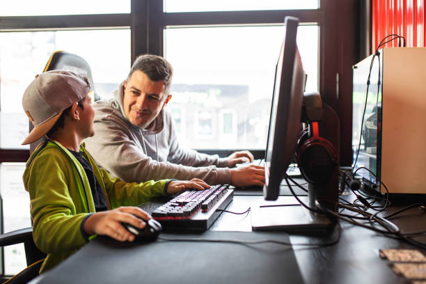
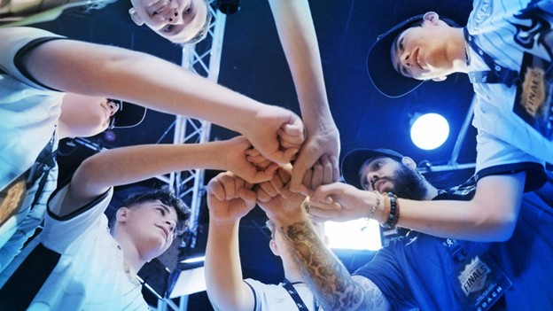
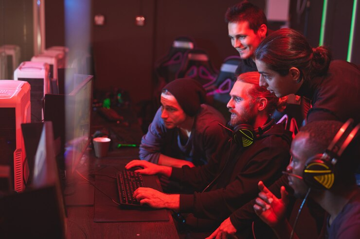

1:1 mentorship & development
Make time to reflect on your goals, notice how you respond under pressure, and decide what to practise next.
Ask about individual mentorshipPrograms & coaching
Our work starts with a conversation about the people you serve and what you want them to practise together.

Parents & families
Learn how gaming communities work and practise conversations about online experiences, peer pressure, and boundaries. A session can help you ask better questions, agree on a household routine, and make it easier for your child to tell you when something goes wrong online.
Talk about family support
Recreation & youth programs
Use gaming to help young people practise communication, decision-making, and teamwork. We can discuss a parent information night or a session for recreation staff and youth leaders who want to talk with families about healthy online play.
Discuss a workshopPlayers, teams & coaches
Build a team routine for giving feedback, recovering from difficult matches, and sharing leadership. Together we can identify what your team needs to practise under pressure and how coaches can reinforce those habits between matches.
Ask about team coaching

Make time to reflect on your goals, notice how you respond under pressure, and decide what to practise next.
Ask about individual mentorship